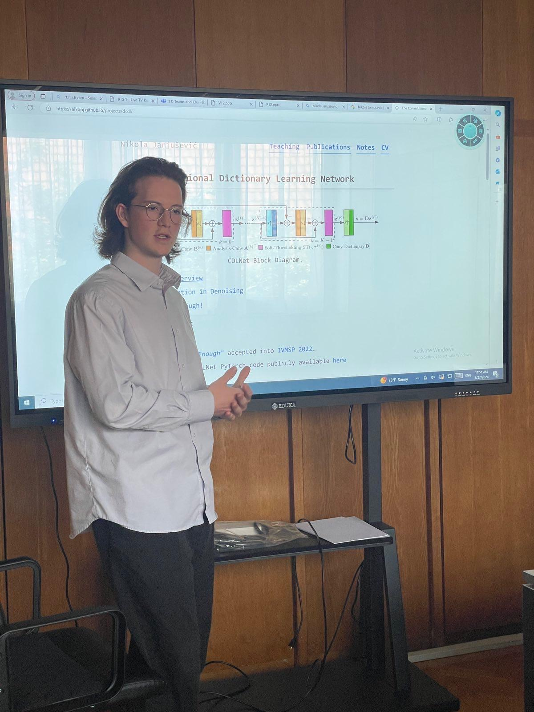
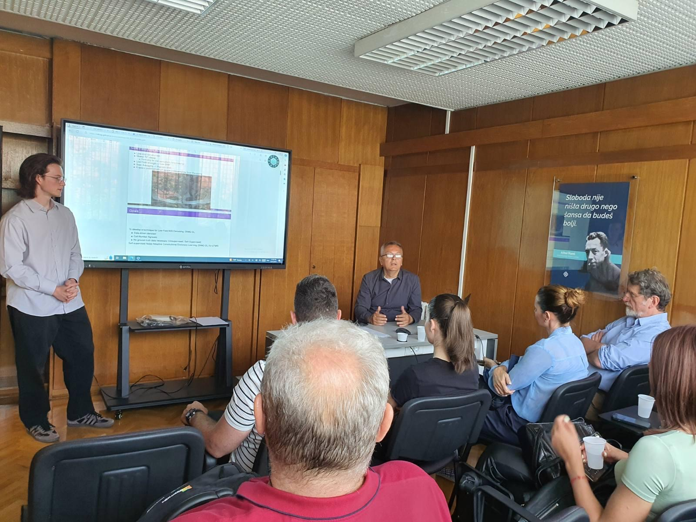
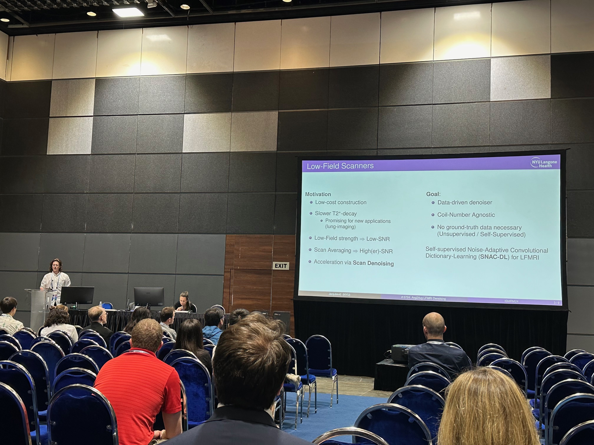
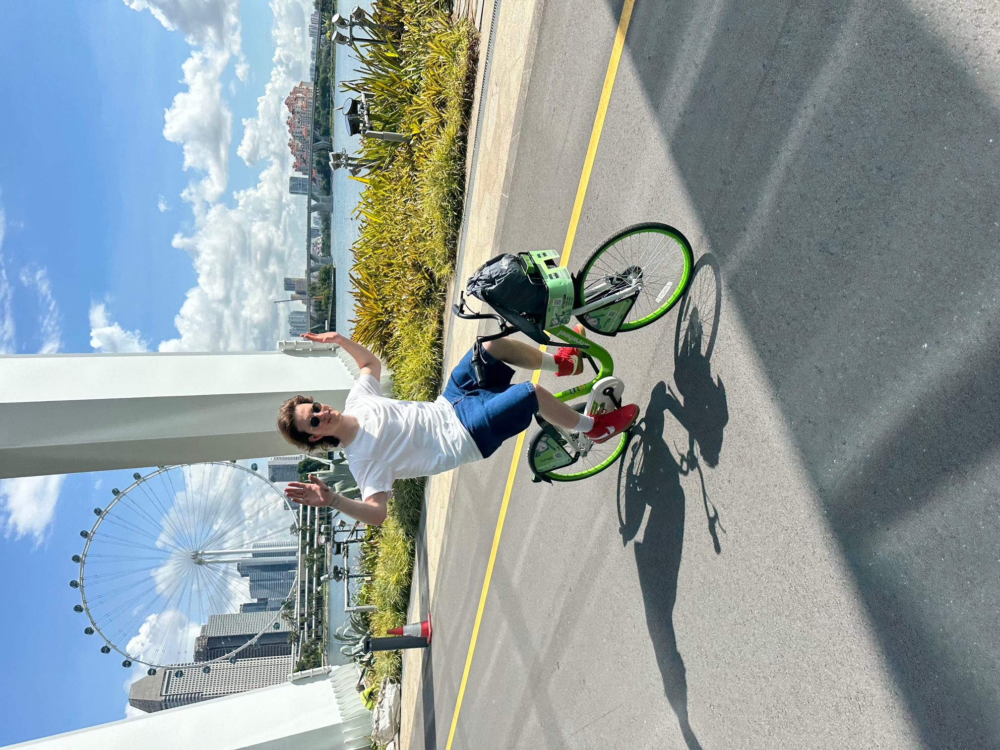

About me
Hello. My name is Nikola Janjušević. I am a Post Doctoral Researcher at the NYU Langone Health Department of Radiology. I earned my Ph.D. in Electrical Engineering from New York University under the advisory of Professor Yao Wang, NYU VideoLab, in 2024. I received my Bachelors in Electrical Engineering from The Cooper Union for Advancement of Science and Art in 2019.
My current interests are in interpretable deep-learning models for solving noisy imaging inverse problems without ground-truth data. My background is in signal-processing, non-smooth convex optimization, and deep-learning. Outside of academia, I go climbing, biking, and skateboarding with my friends.
Email me at nikola at nyu dot edu.
Updates
[April 2025] Amir and I will be at IEEE MIPR 2025 to give our Tutorial, Directly Parameterized Neural Network Construction for Generalization and Robustness, August 6th-8th San Jose CA, 2025.
[April 2025] I'll be giving an IEEE webinar with Dr. Amirhoussein Khalilian-Gourtani, SPS Webinar: Directly Parameterized Neural Network Construction for Generalization and Robustness in Imaging Inverse Problems, July 17th 11:30am EST. Register with the link!
[April 2025] Self-Supervised Noise Adaptive MRI Denoising via Repetition to Repetition (Rep2Rep) Learning preprint available.
[February 2025] GroupCDL: Interpretable Denoising and Compressed Sensing MRI via Learned Group-Sparsity and Circulant Attention published in IEEE Transactions on Computational Imaging.
[January 2025] I'm going to ISMRM 2025 in Hawaii this May to poster present two abstracts!
[December 2024] Learned Primal Dual Splitting for Self-Supervised Noise-Adaptive MRI Reconstruction accepted in ISBI 2025.
[September 2024] Joined NYU Langone Health!
[August 2024] Successfully defended my thesis and finished my thesis!
[May 27th 2024] Gave a talk in Belgrade: Strategija Razvoja Veštačke Inteligencije Kod Nas/An Artificial Inteligence Strategy for Serbia, Eduka Institute of Organizational Business.


[May 9th 2024] Presented at ISMRM 2024 in Singapore!
"Advanced Deep Learning Denoising for Accelerated 0.55T Prostate MRI" (Power-Pitch + Digital Poster Presentation)
"SNAC-DL: Self-Supervised Network for Adaptive Convolutional Dictionary Learning of MRI Denoising" (Digital Poster Presentation)


Recent blog posts
TLDR: employing the multi-dimensional chain-rule means writing matrix-multiplication. ...
Convolutional Neural Networks' building blocks aren't just performing the convolution you learned in DSP. In my opinion, the best way to think of these layers is as a channel-wise matrix-vector multiplication of convolutions.  ...
...
So-called interpretably constructed deep neural networks often sell their methods by showing near state-of-the-art performance for only a fraction of the parameter count of black-box networks. However, can we consider these fair comparisons when the number of learned parameter counts are not matched? ...
A walkthrough of implementing Total Variation color image denoising in the Julia programming language, starring Fabio and Masa.  ...
...
I often find my downloads folder filling up with tons of research papers with nondescript (ID) names, such as "1909.05742.pdf". Keeping these PDFs open allows me to keep track of them, but once I close those windows they seem as good as lost. To remedy this, I've written a short Python script employing a wrapper for the arXiv.org API. ...
The iterative soft thresholding algorithm is one of the simplest algorithms for sparse coding (in this case, solving the basis-pursuit denoising functional). Understanding its derivation as a special case of the Proximal Gradient Method is a great introduction into the world of proximal methods. ...
Zathura + latexmk -> :). Latest update: 17th January 2021. ...